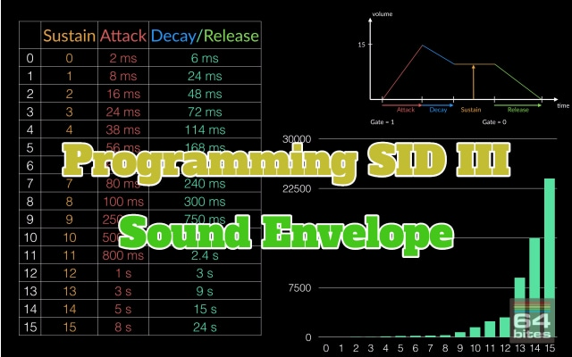

Episode #073 - KickAssembler 4.x
Some time ago a new version of the Kick Assembler compiler had been released with a plenty of new features. Today we are going to take a closer look at some of those features. We will also figure out how to update our existing source code to the new version.Watch the video
Download show notes
Click on the button below to get the full transcript, source code and programming exercises.
This way you follow along while watching the episode.
You will not only understand what is happening but also code everything yourself!
Download show notesBy the way. This episode is part of a Season 9. So you can get it in a bundle with 8 other episodes.
You can read more about that below
Season 9 - New Tools, Debugging, Programming SID

Here's what you will get
- 9 videos (50+ minutes in total)
- transcripts (13000+ words)
- source code examples (10000+ LOC)
- access to 64bitesVIP Facebook group, where you can get help
- plenty of exercises to solve on your own
- online streaming
- download with no DRM
- one time payment (no monthly/annual fees)
All Episodes in this Season

Episode #081 - Filtering Sound
We can create new waveforems not only by adding pure tones together. We can also start with complex sounds, like saw or a rectangle wave and subtract different frequencies from them. This is the basic priciple behind filtering sounds. And the best part? It's a built-in feature of the SID chip!
Episode #080 - Test, Sync & Ring Modulation
Today we will learn how to synchronize SID voices using the test bit and hard-sync functionality. We will also use the ring modulation to... create sick bass drops for Dub Step.
Episode #079 - Combining Sounds
Up until now, we've been using only the first one of three voice of the SID chip. But if we use all three voices simultaneously, we can play songs with chords, simulate multiple instruments, or play sound effects in games while the music is playing.
Episode #078 - Write Only Registers
Most SID registers are write-only. It means that we can't use the usual read-modify-store construction to update just part of a register. The most common technique to deal with this problem is to employ so-called shadow registers. And that's what we are going to learn today! 
Episode #077 - Programming SID III - Sound Envelope
We already know how to play sounds using the SID chip. Today we are going to learn how to make them more interesting by changing attack, decay, sustain and release registers, which define a so-called sound envelope.
Episode #076 - C64 Debugger III - Debugging
It's about time to get the most of the C64 Debugger! In this episode you will learn - how to load any demo, - use snapshots to quickly jump to interesting moments, - stop the excution at any time, - step over instructions, subroutines, cycles and - set breakpoints on program counter, memory write, interrupts and raster positions.
Episode #075 - C64 Debugger II - Overview
In this episode we will learn how to use basic features of the C64 Debugger. Memory map allows us to quickly notice patterns in the running program. Disassembly view allows us to locate the program counter and modify the code on the fly. Memory dump view can help us edit raw data and shows memory as sprite or character bitmaps. Finally we get familiar with status views of VIC-II, SID and both CIA chips.
Episode #074 - C64 Debugger I - Setup
Today we are going to take a look at one of the most powerful programming tools for Commodore 64. The C64 Debugger by Slayerek. Even though it's not even a 1.0 release, it already has plenty of features that can make programming, debugging or examining programs so much easier.